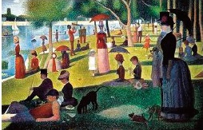

Georges Seurat (1859-1891) tarafından yapılan La Grande Jatte Adasında Pazar Öğleden Sonrası, post-izlenimciliğin en iyi bilinen eserlerinden biridir. Seurat’ın ünlü noktacı tekniğinde ortaya çıkarılan resim, Paris yakınlarında Sen Nehri’nin kıyıları boyunca yürüyen, oturan, balık tutan ve yelkene binen insanların huzurlu bir sahnesini yakalamıştır.

La Grande Jatte resmine götüren yıllarda Seurat, optik çalışıyordu ve optikle ilgili deneyler yapıyordu. Theorie scientifique des couleurs (1881) ismindeki, Ogden Rood’un renk üzerine bilimsel eserinden etkilenen Seurat, doğal parlaklığı ve rengi kalın uygulanan noktalarla veya boya vuruşlarıyla nakletmek için bilimsel bir sistem geliştirdi. Asnieres Hamamı’na Gidenler (1883) resmi, bu tekniğin daha büyük bir dış mekan sahnesine uygulamasını gösterir.
Seurat, sonunda iptal edilen 1885’teki bir sergi için zamanında bitirecek şekilde 1884’te La Grande Jatte resmi için 2 metreye 2 metre 30 santimetre ölçülerindeki tuvali üzerinde çalışmaya başladı. Ondan sonra, sekizinci ve son izlenimci grup sergisine sunmadan önce ‘renk veren aydınlıkçılık’ adını verdiği bir teknikle resminin birçok kısmı üzerinde yeniden çalıştı. Resmin bittiğini düşündüğü andan itibaren Seurat, kağıt, pano ve tuval üzerine elli dokuz hazırlık eskizi yaptı. Bu eskizler, onun yaratıcı sürecine büyüleyici bir bakış sağlar.
Resim, Sen’in öbür tarafındaki Courbevoie kasabasına bakan La Grande Jatte adasının kuzeybatı kıyısında konumlanmıştır. Sahne kırk sekiz insan, sekiz kayık, üç köpek ve bir maymun içerir. Sağda ayakta duran bir çift, kompozisyona egemen olur. Kadın, köpek ve ayaklarının ucundaki maymun için olduğu aşikâr iki tasma taşır. Solunda ise rahat giyimli ve çimenlikte yayılarak oturup bir sigara tüttüren üç kişiden oluşan bir grup vardır. Yanında – tembelce uzanan adamın aksine – gergin bir şekilde diklemesine oturan kibar giyimli bir adam vardır. Resmin merkezinde yanardöner beyaz bir elbise giymiş olan bir çocuk, izleyiciye doğru resimden dışarı bakan tek figürdür. Gerilere gidildiğinde gruplar halinde veya kendi başlarına olan insanlar görülür. Sahne, dönüşümlü olarak rahat ve resmîdir. Figürler, kartondan kesilmiş ve manzaraya dikkatlice yerleştirilmiş gibi, biraz düz görünürler.
Kendi ifadesine göre Seurat, resmin Parthenon’daki duvar resimleri gibi, o derece kıymetli antik çağ usta eserlerle karşılaştırılacak değerde, çağdaş yaşamın anıtsal bir kaydı olmasına niyet etmişti. 1924’te Frederick Clay Bartlett, Chicago Sanat Enstitüsü için, bugün bile sergilenen La Grande Jatte resmini satın aldı. George ile Parkta Pazar Günü isimli, Stephen Sondheim tarafından yazılan son zamanların bir müzikali, tuvali sahneye taşıdı.